AN INDEPENDENT CREATIVE STUDIO
Make yourself
at home.
Welcome to Backbenchers. A little room for
games, useful software, and good company.
Warm light. Quiet focus. A little pirate spirit.
Opening the doors…

AN INDEPENDENT CREATIVE STUDIO
Welcome to Backbenchers. A little room for
games, useful software, and good company.
Warm light. Quiet focus. A little pirate spirit.
Opening the doors…
Pull up a chair.